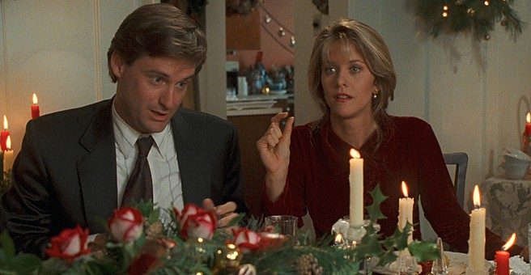

Dinner and dancing nightly
Supper is served from six
The Menu
Evening Star Room
Sixty-fifth floor
The kitchen
Baked salmon26.00
Fillet roasted under parsley, grated lemon peel and bread crumbs. Steamed green beans, warm butter spooned over.
Mild. Nothing to sneeze at.
Filet mignon34.00
Ten ounces, broiled to order, with béarnaise and potatoes Anna.
Roast chicken24.00
Rosemary, garlic, pan juices, wild rice.
Sweets
Valentine hearts2.14
Browned butter sugar cookies, hand cut, iced red and white.
A pair on every saucer tonight.
Soufflé for two14.00
Dark chocolate, baked to order, sauce poured at the table.
The lounge
Iced mocha4.50
Strong coffee with dark chocolate melted through, cold milk over ice, whipped cream and cocoa.
The way they take it in Seattle.
Late show popcorn3.50
Popped in coconut oil, tossed with browned butter and sea salt.
Bar radio stays on the call-in show.

Candles and roses on every table, February 14.
Form 0214. Printed in U.S.A. © 1993.Prices subject to change.
Reserved
Table 14Two at eight, by the window. Please tell the kitchen about my allergies. Something mild.
Walter Jackson